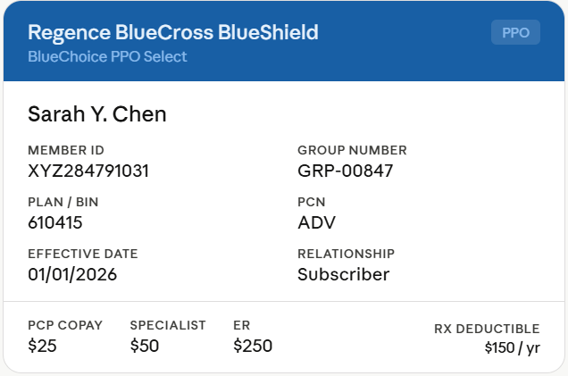

Your health record
Health Profile
34 years old · female · Blood type A+
Emergency Contact
Michael Chen · (555) 123-4567

First noticed: Mar 9, 2025
More noticeable on weekdays
First noticed: Jan 31, 2025
Usually in the afternoon, worse with stress. Responds to ibuprofen.
First noticed: Mar 9, 2025
More noticeable on weekdays. May be related to sleep quality.
10mg — as needed for allergies
10mg — once daily
Rash — moderate severity
Perennial, mild - managed with antihistamines
Stage 1, well controlled with medication
Laparoscopic surgery - no complications
Local pharmacy
Primary Care Physician
Updated booster - 2024
Seasonal flu shot - 2024-2025
No family history added yet